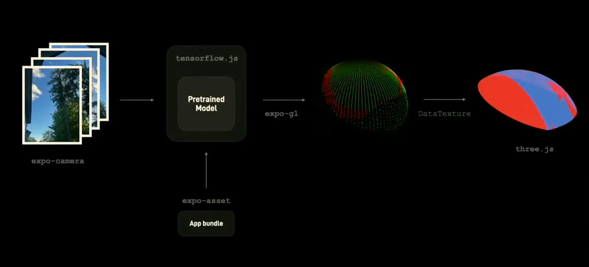

My Work
.jpeg)
Around: a Cloud and React based Social Network
-
Designed and implemented a short-video web application with React JS
Implemented features for users to create and browse posts and support search nearby posts
Improved the authentication using JWT token based registration/login/logout flow with React Router v4
Developed the main functions in Go to handle posts and deployed to Google Cloud
Utilized ElasticSearch to optimize search functions such that users can search recent posts and list personal posts

Starlink: React JS based Starlink Trajectory Visualization
-
Designed and developed a visualization dashboard using ReactJS and D3 to track satellites in real-time based on geo-location
Built location, altitude, and duration based selector to refine satellite search
Animated selected satellite paths on a world map using D3 to improve the user-friendliness
Deployed the dashboard to Amazon Web Service for demonstration
.jpeg)
Tinnews: a Tinder-like News App
-
Designed the Instagram Flavor News app based on Google Component Architectural MVVM
Implemented the bottom bar & page navigation using JetPack navigation component
Utilized 3rd party CardStackView(RecyclerView) to support swipe gestures for liking/disliking the news
Built the Room Database with LiveData & ViewModel to support local cache and offline model
Integrated Retrofit and LiveData to pull the latest news data from a RESTful endpoint (newsapi.org)
.jpeg)
Video+: A Personalized Twitch Resources Recommendation Engine
Built a web page with rich + user friendly experience using React and Ant Design
Used MySQL database on Amazon RDS to store position data fetched from Twitch API
Designed algorithms (e.g., content-based recommendation) to implement twitch resources recommendation
Supported login, logout, favorite and recommendation services with corresponding Java Servlet
Deployed to Amazon EC2 for more visibility
.jpeg)
AI-Powered Resume Analyzer
-
Developed a cloud-based AI-driven resume analyzer that helps job seekers improve their resumes by providing real-time feedback based on industry best practices
Built the frontend using React.js for a clean and responsive user experience
Integrated OpenAI's GPT API to provide instant resume feedback and keyword optimization
Developed a Flask/Python backend to process resume text and analyze structure, readability, and job match percentage
Stored and managed resume data using Firebase Firestore for real-time updates
Deployed the application on Google Cloud Platform (GCP) with auto-scaling capabilities
.jpeg)
Cloud-Powered Task Management App
-
Designed and deployed a full-stack task management system to enhance productivity and collaboration among remote teams
Built the frontend using Next.js for server-side rendering and improved SEO performance
Integrated AWS Cognito for user authentication and role-based access control
Implemented Kanban-style task boards using Drag and Drop (React-Beautiful-DND) for an intuitive workflow
Developed a Node.js and Express backend with MongoDB for storing and managing tasks
Hosted the application on AWS Lambda & S3 to ensure cost-effective scaling